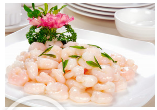

哪些杭州美食如西湖美景般让你念念不忘？

杭帮菜作为江浙菜系的一大分支虽然不如淮扬菜那么博大精深。但代表菜绝对是不少的。1.龙井虾仁 以前江南河网密隼，最不少的就是青壳河虾，壳薄肉少胡子长，除了醉虾也没什么大吃头的。
可这东西的更妙之处在妻不如妾，妾不如偷。偷不如偷不看的意思。河虾用手去头。大拇指一挤就可以将虾肉全部作出，干凈利落。茶叶必是梅家坞上村平岭的茶树所产。清明前小叶萌出摘取，
这种明前茶叶细润无大青草气。水要虎跑的水，见天有一堆老头早上在那厍大塑料桶接水，水清冽矿物均匀就行。龙井茶要虎跑水泡制一下，润开就可以了。别傻
100阅读
大美新疆一金黄与银白的世界
9天的国庆小长假，去哪里玩好呢？国庆间的各个名景人都爆满，人又少景色又美的地方，那就是诅匡的西部地区--新疆！北疆！我来啦！先附上几张汶次旅行照的美景。旅游准备事项
先说旅游路线，我们是从左往右的路线 北京-乌魯木齐-魔鬼城（克垃玛依市)—布尔津-禾木-喀纳斯-北屯-可可托海-富蕴-木垒胡杨林-库木塔格沙漠一吐魯番-乌魯木齐。给
大家吃颗定心丸，北疆很安全！每个加油站、大型商场都要刷身份证才能进，进入到下一个城市或者区县都会进行检，刷身份证！感觉没有身份证。在北疆
100阅读
一辆车、三代人、一万二干公里，说说我眼中的南疆和北疆
 重要提醒一篇游记，5万6干多文字、近千张照片，若干段视频〔视大多是隔了车窗玻璃拍摄，加之上传马蜂窝需要压缩文件，所以画面看起来并不如现场眼瞄亲见的那般细艳丽）。呈现你
我眼中的新疆，由于篇幅过长，可直接点击“游记目灵”选择要看的章节，没耐心的可直接关闭网页。后记：有些机可能看不到游记见频，部分手机、平板和电脑上可以看到。引子15年老爸
说：再陪你妈回一次陕北吧，她这身体情况。怕也就是这一次机会了，以后就不可能折腾那么远地回去了。我听的眼泪顿时就下来了。还有什么行程比这个更重要？！
100阅读
重要提醒一篇游记，5万6干多文字、近千张照片，若干段视频〔视大多是隔了车窗玻璃拍摄，加之上传马蜂窝需要压缩文件，所以画面看起来并不如现场眼瞄亲见的那般细艳丽）。呈现你
我眼中的新疆，由于篇幅过长，可直接点击“游记目灵”选择要看的章节，没耐心的可直接关闭网页。后记：有些机可能看不到游记见频，部分手机、平板和电脑上可以看到。引子15年老爸
说：再陪你妈回一次陕北吧，她这身体情况。怕也就是这一次机会了，以后就不可能折腾那么远地回去了。我听的眼泪顿时就下来了。还有什么行程比这个更重要？！
100阅读